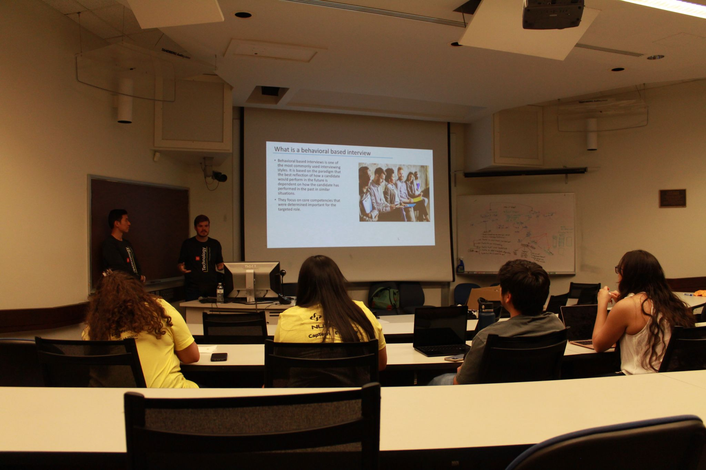
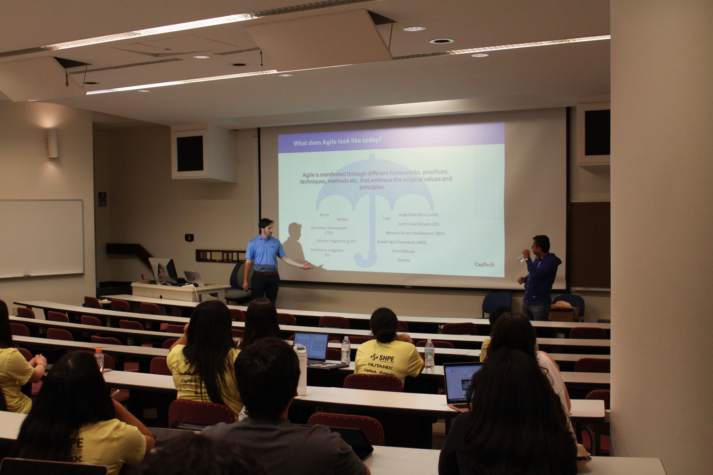

IBM: Innovating with IBM: Career Journeys, Challenges, and Future Insights
Join IBM professionals as they share their unique career journeys, the challenges they’ve overcome, and key insights about the future of technology and innovation. This workshop offers an inside look at how one of the world’s leading tech companies evolves in a rapidly changing industry and provides advice for students preparing to enter the workforce.
CapTech: Code, Collaborate, Conquer: Agile and the Software Development Lifecycle
Learn how real-world software is built using Agile methodologies! CapTech consultants will walk you through the Software Development Lifecycle (SDLC) — from initial brainstorming to deployment — and show how teamwork, collaboration, and adaptability are key to successful tech projects. Expect practical tips you can apply to your own hackathon projects and beyond.
Wells Fargo: Interview Prep: How to have a Successful Interview
Master the art of interviewing with advice straight from hiring professionals at Wells Fargo. In this session, you'll learn how to confidently prepare for technical and behavioral interviews, structure your answers, and make a memorable impression on recruiters. Whether you're preparing for your first job or an internship, this workshop will set you up for success.
Fidelity: Tips on How to Land a Tech Internship/Full-time Job Post Graduation
Want to land that dream internship or tech role after graduation? Representatives from Fidelity will offer practical advice on how to stand out during your job search, from building a strong resume and LinkedIn profile to networking effectively and navigating the application process. Get ready to leave with actionable steps toward securing your next opportunity.
Microsoft HOLA: Leading Women in Tech Panel
Hear from inspiring Latina leaders in tech during this panel hosted by Microsoft HOLA (Hispanic and Latinx Organization of Leaders in Action). Panelists will discuss their experiences breaking barriers, navigating career paths, and building supportive communities in the tech industry. This empowering session is open to everyone interested in fostering diversity and leadership in tech spaces.
SHPE: Non-SWE Careers in Tech
Tech isn’t just for coders! SHPE (Society of Hispanic Professional Engineers) will introduce you to exciting non-software engineering careers available in the tech world — from product management to UX design to technical consulting. Learn how you can leverage your skills to find a fulfilling tech career even if coding isn’t your primary passion.
Lauren Lascano: Shine Bright: Crafting a FAANG-Worthy Resume
Lauren Lascano, the UNC Latinos in Tech Technical Programming Chair and an incoming Software Engineering Intern at Apple, shares her insider knowledge on building a resume that captures the attention of top tech companies. Learn how to highlight your experiences, frame your skills effectively, and create a FAANG-worthy resume that opens doors to exciting career opportunities.